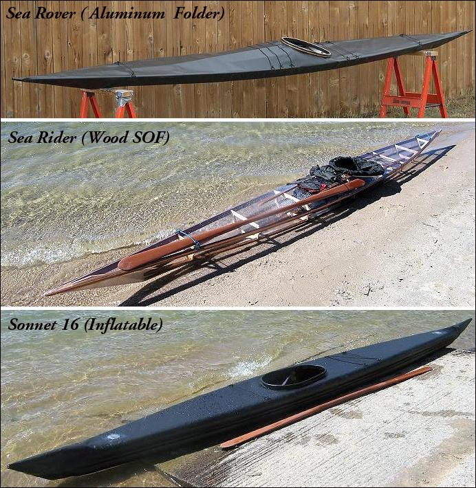

NOTE
This is a mirror site of www.yostwerks.com
All information herein is and remains the EXCLUSIVE PROPERTY of Tom Yost!
I'd like to thank him for the huge amount of effort he clearly has invested in creating it.
To report issues with this mirror website, please contact
Support
Yostwerks - Kayak Building Manuals

Folding Kayak Builders Manual
Wood Frame Kayak Builders Manual
Inflatable Kayak Builders Manual
Yostwerks Copyright © 2003 - 2015 Thomas D. Yost